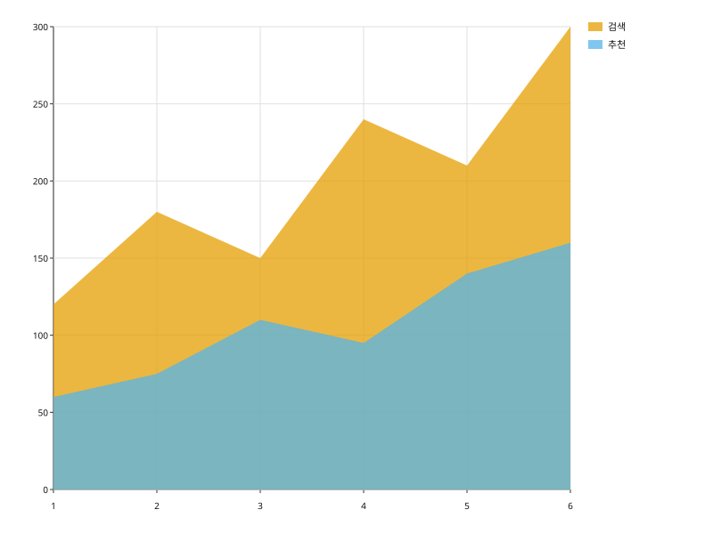
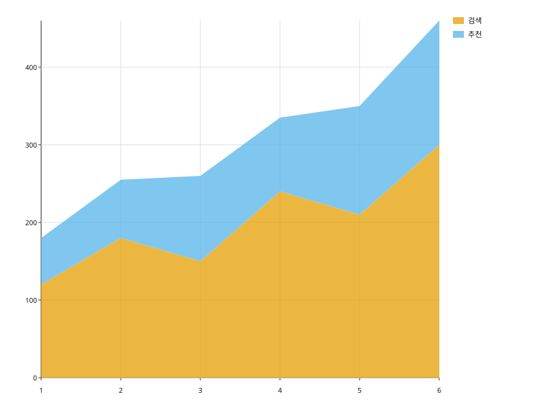
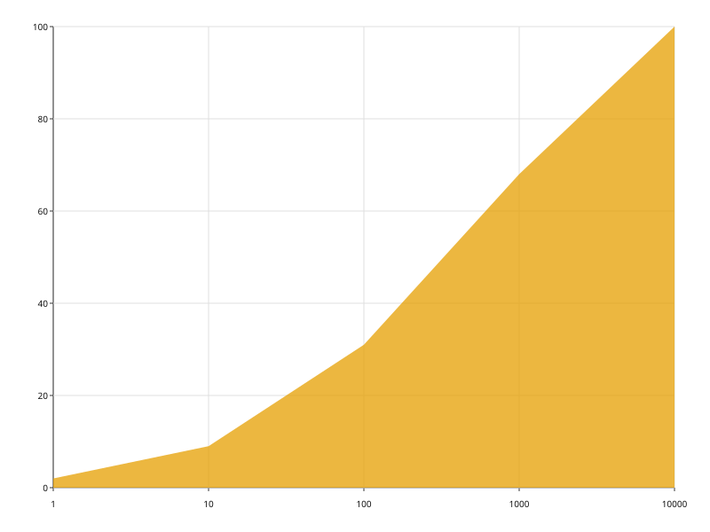

선 아래를 0까지 채운다. 채워진 면적이 값이므로 y 축은 항상 0을 포함한다.
import svgplot as sp
TRAFFIC = {
"주차": [1, 2, 3, 4, 5, 6, 1, 2, 3, 4, 5, 6],
"방문": [120.0, 180.0, 150.0, 240.0, 210.0, 300.0, 60.0, 75.0, 110.0, 95.0, 140.0, 160.0],
"유입": ["검색"] * 6 + ["추천"] * 6,
}ONE_SERIES = {"주차": [1, 2, 3, 4, 5, 6], "방문": [120.0, 180.0, 150.0, 240.0, 210.0, 300.0]}
sp.areaplot(ONE_SERIES, x="주차", y="방문")
sp.areaplot(TRAFFIC, x="주차", y="방문", hue="유입")
sp.areaplot(TRAFFIC, x="주차", y="방문", hue="유입", stacked=True)
SIZES = {"바이트": [1.0, 10.0, 100.0, 1000.0, 10000.0], "누적": [2.0, 9.0, 31.0, 68.0, 100.0]}
sp.areaplot(SIZES, x="바이트", y="누적", xscale="log")